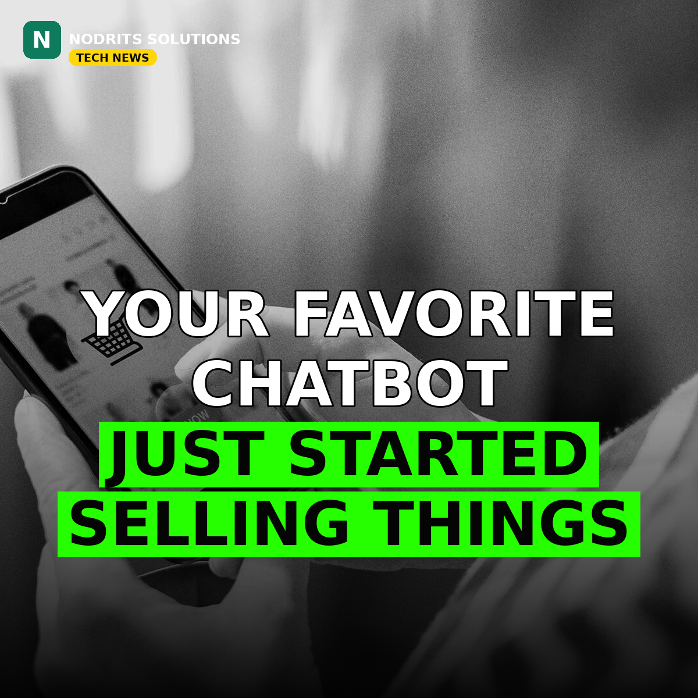

ChatGPT Just Became a Storefront — Businesses Can Now Claim Profiles and Sell With AI Agents

OpenAI has turned ChatGPT into a place where businesses can set up shop. On Tuesday, November 10, the company launched "Businesses" in beta inside ChatGPT — a new feature that lets companies claim verified profiles, publish product feeds with live prices, and put an AI agent in front of shoppers to answer questions and guide purchases. For the first time, the chatbot people ask everything is also a storefront.
What happened
At the center of the launch is a tool called Business Hub. Through it, an eligible business can claim its organization in ChatGPT and, once verified, update its key details and add self-service product feeds containing pricing and availability. A claimed profile carries a blue check mark — though OpenAI says claiming a profile does not guarantee higher placement in ChatGPT's answers or more sales. Business Hub also shows aggregated insights: how often the business is mentioned in ChatGPT responses, how many views and website clicks those mentions generate, and the top "discovery topics" where the business shows up.
The second piece is Business Agents. These let people chat directly with an agent that represents a business — asking about products, comparing options, and getting help before buying. The chats are clearly labeled and kept separate from the main ChatGPT conversation. The agents are rolling out first to eligible e-commerce and online service businesses in the United States, and OpenAI says it plans to expand to more markets and business categories over time.
OpenAI also confirmed the commercial side: businesses can sponsor their Business Agent and use it as the destination for ChatGPT Ads, with sponsored placements labeled. Existing OpenAI Enterprise customers and advertisers can claim their business through their OpenAI representative, while Shopify merchants can connect their stores through Business Hub or the Shopify admin. On privacy, OpenAI says it does not share users' conversations or Business Agent chats with businesses — insights are aggregated, and only appear once there are enough interactions above certain thresholds to protect individual privacy.
Why it matters
ChatGPT reaches 1.2 billion people each week, according to OpenAI — and until now, businesses had almost no control over how they appeared inside it, or any data on when they did. Business Hub is effectively OpenAI's own version of a search console for the AI era: brands can finally see their mentions and clicks, keep their information current, and put a branded agent where the questions are being asked. It also puts OpenAI in direct competition with the wave of startups selling brands data about how they show up in AI answers.
For e-commerce, the shift is bigger still. If shoppers start asking a business's agent instead of browsing its website, the storefront moves inside the chat — and the businesses that claim their profile early, keep their product feeds fresh, and build a genuinely helpful agent will be the ones ChatGPT's users meet first.
What it means for you
If you run a business — especially an online store — this is a new discovery channel you can claim right now if you are eligible in the US, and one to prepare for everywhere else. Keep your product catalog, prices and business details accurate and machine-readable, because that is what feeds the agent. If you are a shopper, expect a new option inside ChatGPT: instead of a link to a store, you may soon chat with the store itself — with the conversation labeled as a business agent, and any sponsored agent clearly marked as an ad. And if you sell through Shopify, the connection is already built in through Business Hub or your Shopify admin.
The Nodrits take
Search changed once when Google put businesses on the map — now the map is a conversation. The businesses that treat ChatGPT as a real storefront, not a billboard, will win the customers who never open a browser tab. Would you buy something through a chat with a business's AI agent, or do you still want a real website before you spend? Tell us below.
Need a website, SaaS product or AI workflow built right?
Nodrits Solutions designs, develops and automates for businesses in Pakistan, the USA, UK, UAE and Saudi Arabia.
Talk to Nodrits →Sources: Reuters (OpenAI launches Businesses in ChatGPT, Business Hub and Business Agents, Nov 10, 2026); Adweek (Business Hub beta, insights and Business Agents rollout); Unite.AI (beta launch details, 1.2 billion weekly ChatGPT users, blue-check profiles). Published November 11, 2026.